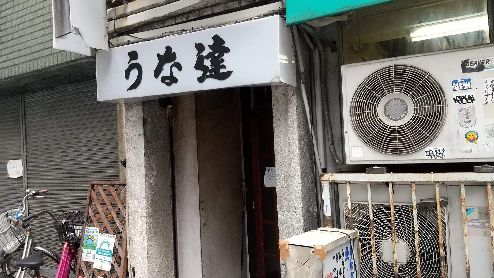
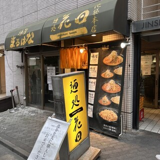
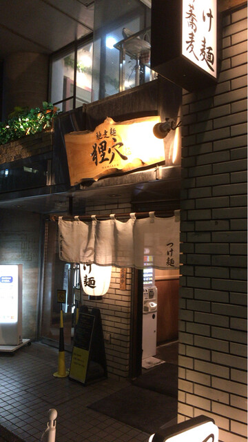
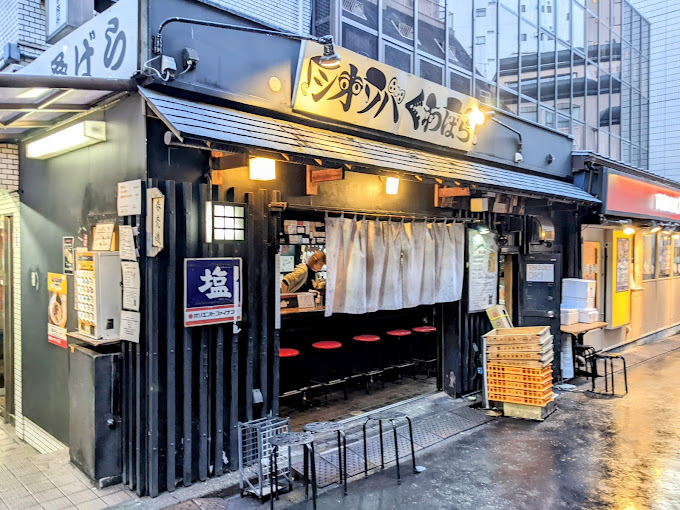
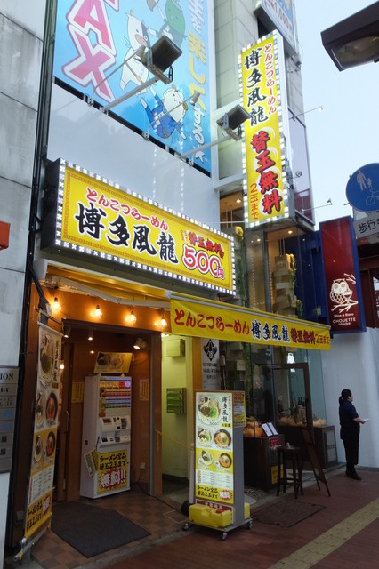
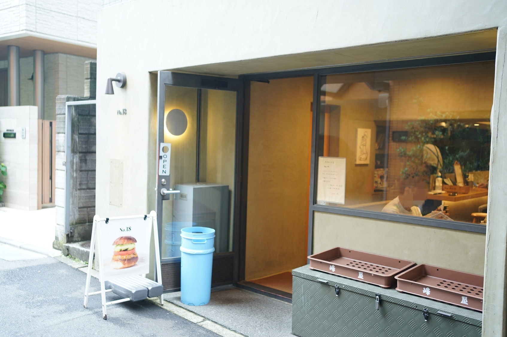
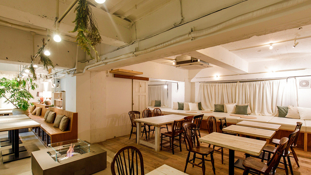
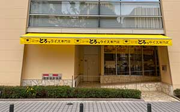
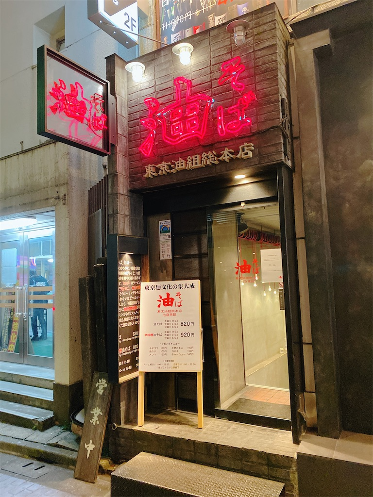
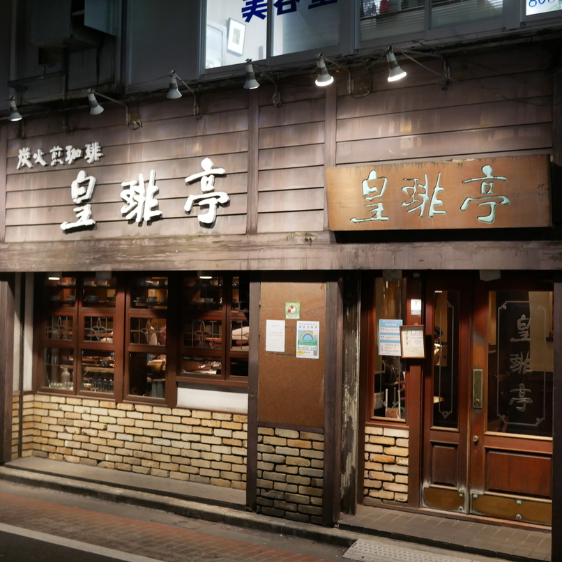

うな達  ここに店舗の詳細情報を入力してください。 うな達 住所: 東京都豊島区東池袋1-31-3 マップ: Googleマップ アクセス: 東京電子専門学校から徒歩2分 電話番号: 03-3983-0008 定休日: 日曜・祝日 営業時間: 平日11:30～14:00（L.O.13:30）17:00～22:00（L.O.21:30）土曜17:00～22:00（L.O.21:30） 予算: 1～1,000円 キャッシュレス決済: 不可（支払いは現金のみ） 禁煙・喫煙: 全席禁煙 予約サイト・口コミ・クーポン: 食べログ
麺処 花田  ここに店舗の詳細情報を入力してください。 麺処 花田 住所: 東京都豊島区東池袋1-23-8 マップ: Googleマップ アクセス: 東京電子専門学校から徒歩6分 電話番号: 050-5594-4941 定休日: 年末年始 営業時間: 11:00～22:30 予算: 1,000～2,000円 キャッシュレス決済: 不可（支払いは現金のみ） 禁煙・喫煙: 全席禁煙 予約サイト・口コミ・クーポン: 食べログ
狸穴  ここに店舗の詳細情報を入力してください。 狸穴 住所: 東京都豊島区東池袋1-32-2 マップ: Googleマップ アクセス: 東京電子専門学校から徒歩4分 電話番号: 03-3982-4055 定休日: 火曜日たまにお休み 営業時間: 月・水・木・金・土 11:00～21:30 : 火 11:00～21:00 ※日は21:00まで 予算: 1,000～2,000円 キャッシュレス決済: 不可（支払いは現金のみ） 禁煙・喫煙: 全席禁煙 予約サイト・口コミ・クーポン: 食べログ
塩そば専門店 桑ばら  ここに店舗の詳細情報を入力してください。 塩そば専門店 桑ばら 住所: 東京都豊島区南池袋1-27-2 マップ: Googleマップ アクセス: 各線 池袋東口から徒歩1分 電話番号: 03-3985-6729 定休日: 月曜日 営業時間: 11:00～22:00（L.O.21:30）※日は21:30（L.O.21:00）まで 予算: 1,000～2,000円 キャッシュレス決済: 不可（支払いは現金のみ） 禁煙・喫煙: 全席禁煙 予約サイト・口コミ・クーポン: 食べログ
とんこつラーメン 博多風龍 池袋東口店  ここに店舗の詳細情報を入力してください。 とんこつラーメン 博多風龍 池袋東口店 住所: 東京都豊島区南池袋1-27-2 マップ: Googleマップ アクセス: 各線 池袋東口から徒歩1分 電話番号: 03-3985-6729 定休日: 月曜日 営業時間: 11:00～22:00（L.O.21:30）※日は21:30（L.O.21:00）まで 予算: 1,000～2,000円 キャッシュレス決済: 不可（支払いは現金のみ） 禁煙・喫煙: 全席禁煙 予約サイト・口コミ・クーポン: 食べログ
No.18  ここに店舗の詳細情報を入力してください。 No.18 住所: 東京都豊島区南池袋1-27-2 マップ: Googleマップ アクセス: 各線 池袋東口から徒歩1分 電話番号: 03-3985-6729 定休日: 月曜日 営業時間: 11:00～22:00（L.O.21:30）※日は21:30（L.O.21:00）まで 予算: 1,000～2,000円 キャッシュレス決済: 不可（支払いは現金のみ） 禁煙・喫煙: 全席禁煙 予約サイト・口コミ・クーポン: 食べログ
AIN SOPH.soar IKEBUKURO  ここに店舗の詳細情報を入力してください。 AIN SOPH.soar IKEBUKURO 住所: 東京都豊島区南池袋1-27-2 マップ: Googleマップ アクセス: 各線 池袋東口から徒歩1分 電話番号: 03-3985-6729 定休日: 月曜日 営業時間: 11:00～22:00（L.O.21:30）※日は21:30（L.O.21:00）まで 予算: 1,000～2,000円 キャッシュレス決済: 不可（支払いは現金のみ） 禁煙・喫煙: 全席禁煙 予約サイト・口コミ・クーポン: 食べログ
神田たまごけん 池袋WACCA店  ここに店舗の詳細情報を入力してください。 神田たまごけん 池袋WACCA店 住所: 東京都豊島区南池袋1-27-2 マップ: Googleマップ アクセス: 各線 池袋東口から徒歩1分 電話番号: 03-3985-6729 定休日: 月曜日 営業時間: 11:00～22:00（L.O.21:30）※日は21:30（L.O.21:00）まで 予算: 1,000～2,000円 キャッシュレス決済: 不可（支払いは現金のみ） 禁煙・喫煙: 全席禁煙 予約サイト・口コミ・クーポン: 食べログ
東京油組総本店 池袋東組  ここに店舗の詳細情報を入力してください。 東京油組総本店 池袋東組 住所: 東京都豊島区南池袋1-27-2 マップ: Googleマップ アクセス: 各線 池袋東口から徒歩1分 電話番号: 03-3985-6729 定休日: 月曜日 営業時間: 11:00～22:00（L.O.21:30）※日は21:30（L.O.21:00）まで 予算: 1,000～2,000円 キャッシュレス決済: 不可（支払いは現金のみ） 禁煙・喫煙: 全席禁煙 予約サイト・口コミ・クーポン: 食べログ
喫茶店 皇琲亭  ここに店舗の詳細情報を入力してください。 喫茶店 皇琲亭 住所: 東京都豊島区南池袋1-27-2 マップ: Googleマップ アクセス: 各線 池袋東口から徒歩1分 電話番号: 03-3985-6729 定休日: 月曜日 営業時間: 11:00～22:00（L.O.21:30）※日は21:30（L.O.21:00）まで 予算: 1,000～2,000円 キャッシュレス決済: 不可（支払いは現金のみ） 禁煙・喫煙: 全席禁煙 予約サイト・口コミ・クーポン: 食べログ